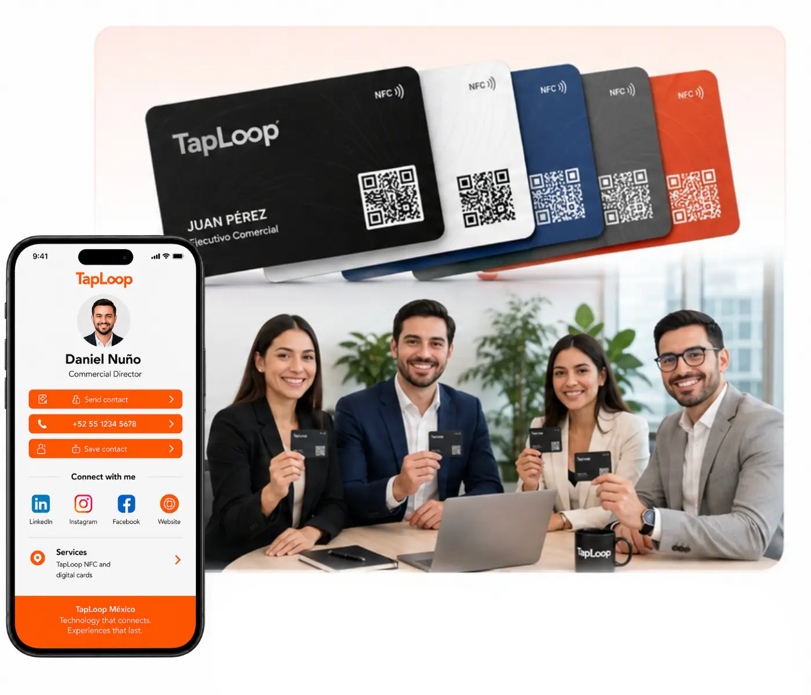
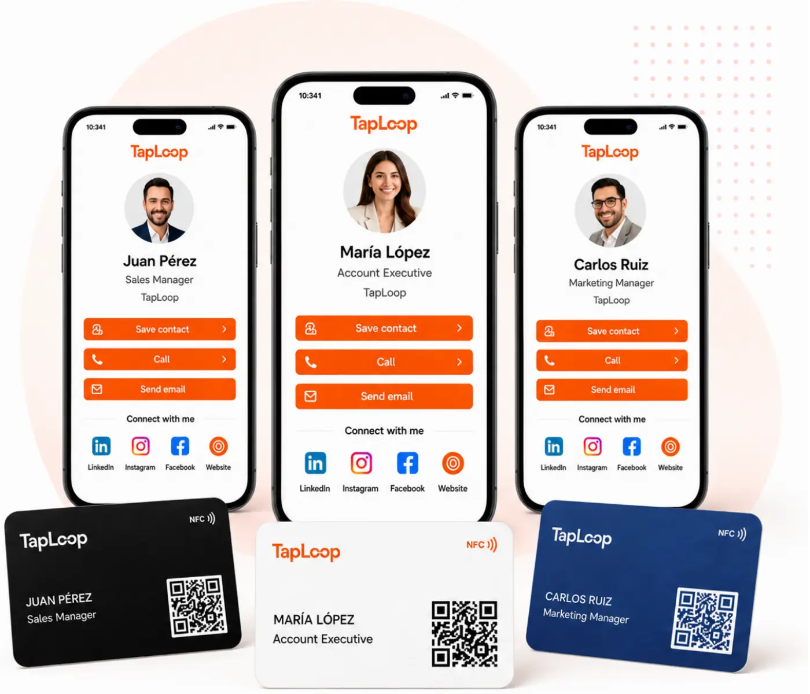
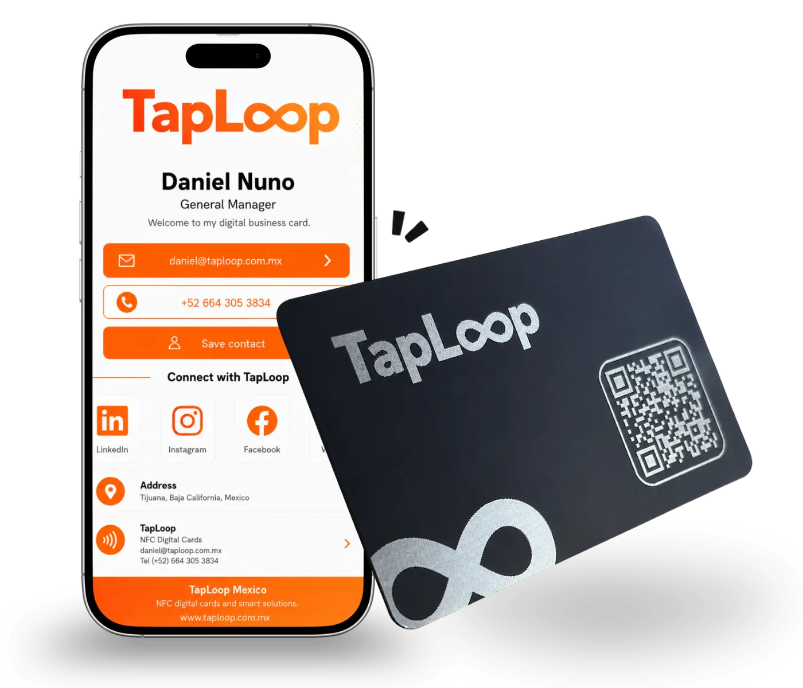
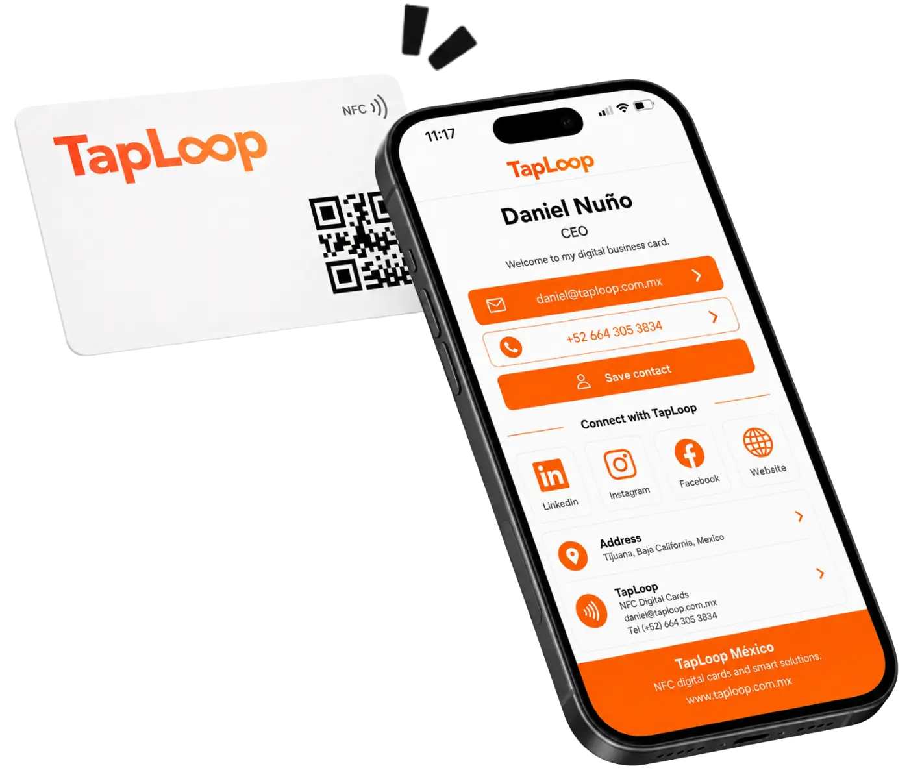
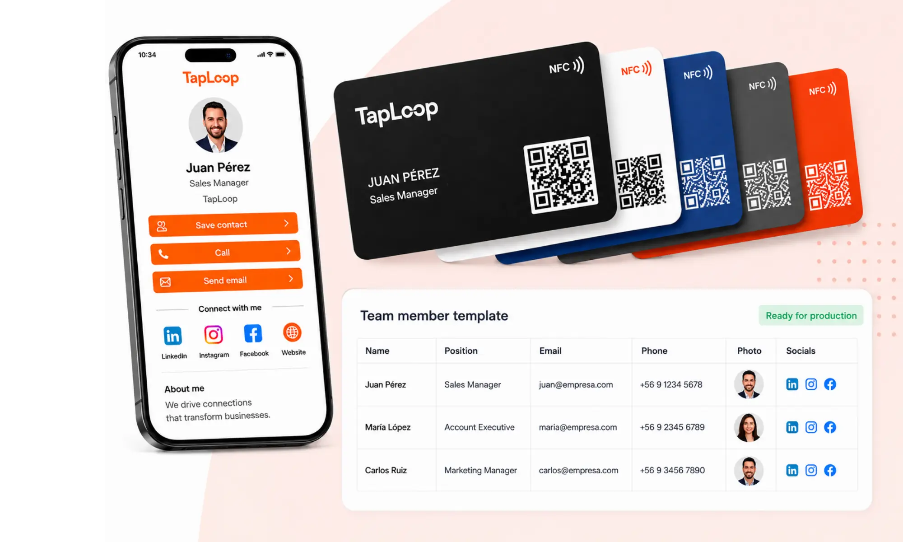
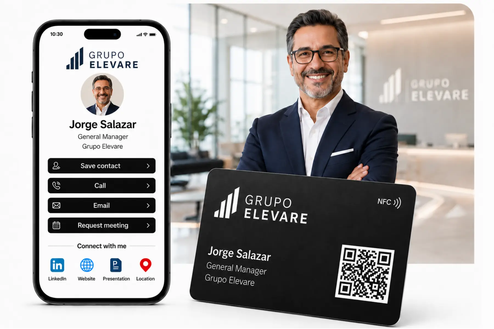

Name and Position
Present every profile professionally.
For companies and teams
Give your team a consistent business NFC card experience while each person shares their own digital profile, role, phone, email, WhatsApp, website, and links.

Individual Profile for Every Team Member
Keep one consistent visual system across your company while each team member shares their name, position, contact details, links, and custom digital profile.
Present every profile professionally.
Share direct and up-to-date contact information.
Include social networks and essential links.
Maintain a uniform company image.

Options for Your Team
Select the TapLoop card that best fits your team profile and the level of presentation you are looking for.
A versatile and professional option for employees, sales, customer service, and corporate events.
View PVC Card
Designed for executives, partners, and high-impact introductions with a more exclusive image.
View Metal Card
Problem and Solution
Avoid improvised cards, mismatched designs, and outdated information. With TapLoop, every team member shares their contact details with a consistent, professional image.

Implementation Process
We support you from project definition through delivery of your NFC cards, ready to use.

We confirm card quantity, material, and your team's goals.
You receive a form or template to gather each team member's details.
We create your cards and digital profiles to match your brand and review adjustments with you.
We program, test, and ship your cards ready to share.
Benefits for Companies
TapLoop helps standardize your company's image, streamline contact sharing, and deliver a professional experience in every interaction.
Each person has their own contact details, links, and digital profile.
We collect team information and simplify the entire process.
Add more team members while maintaining the same visual system.
We support you from proposal through final delivery.
Examples and Use Cases
Every area of your company can use TapLoop NFC cards and digital profiles to reach its goals and build more connections.
Share your contact details, WhatsApp, catalog, and presentation in seconds. Ideal for closing more meetings and following up instantly.
Each advisor has their own card and profile while maintaining the agency's identity and professionalism in every interaction.

Executives and managers can use premium cards with individual profiles to strengthen their network and corporate image.
Answers about TapLoop NFC cards, digital profiles, and team solutions.
It is a physical card with an NFC chip and QR code that opens a digital profile with contact details, WhatsApp, social media, website, and links.
No. The digital profile opens in the phone browser through NFC or QR code.
Yes. The card and profile can be customized with your logo, colors, name, role, QR code, and key links.
Yes. We can create a consistent visual system and one digital profile for each employee.
Ready to Equip Your Team?
Tell us your team size, preferred card format, and the information each digital profile should include.